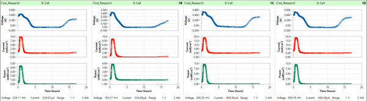
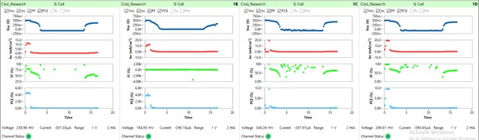

Software Interface Overview¶
The ARKEO main window provides an overview of all channels, their measurement status, and the real-time graphs associated with active devices. This page introduces the layout of the interface and explains the purpose of its main elements. Understanding the interface helps users follow ongoing measurements and diagnose unexpected behavior during JV scans or tracking.
The images below show the primary sections of the software interface.
{kind=link}


Toolbar Overview¶
The toolbar provides quick access to frequently used functions.
Select an item below to navigate to the corresponding documentation page.
-
 Settings – Configure channels. Go to settings →
Settings – Configure channels. Go to settings → -
 Holder – Manage sample-holder layouts and device positioning. Go to sample holder tool →
Holder – Manage sample-holder layouts and device positioning. Go to sample holder tool → -
 Results – View and interpret measurement results and exported data. Go to results →
Results – View and interpret measurement results and exported data. Go to results → -
 Sensors – Overview of environmental sensors and how they integrate with measurements. Go to sensors →
Sensors – Overview of environmental sensors and how they integrate with measurements. Go to sensors → -
 Mode – Select measurement or operation mode.
Mode – Select measurement or operation mode. -
 Log – View system or measurement logs.
Log – View system or measurement logs. -
 Help – User help or documentation overview (this website)
Help – User help or documentation overview (this website) -
 API – Documentation for integrating ARKEO programmatically
API – Documentation for integrating ARKEO programmatically
Open API documentation →
Summary Table¶
At the top of the main window, the summary table displays one row per channel. Each row indicates:
- whether the channel is enabled
- the assigned user
- the device name
- the current measurement mode (JV scan, tracking, idle, etc.)
The table updates continuously, allowing multiple users to monitor their channels simultaneously.
Real-Time Graphs¶
Below the summary table, a set of real-time graphs displays measurement data for the selected channels. The graphs can be switched between several visualizations:
- voltage versus current
- voltage versus power
- tracking over time
- extracted parameters over time
Four channels are shown together in each graph window, matching the organization of the four-channel SMU hardware. New data points appear as the measurement proceeds, and the full JV curve is updated after each completed scan.
Measurement Status¶
During a measurement, the interface shows whether the system is performing a JV scan, running maximum power point tracking, waiting for the next JV interval, or standing by. Tracking mode includes updates of the measured voltage, current, and power, along with automatic corrections applied by the control algorithm.
When a JV scan completes, the extracted parameters—such as Voc, Jsc, V_MPP, J_MPP, and fill factor are added to the parameter graph. This provides immediate feedback about device stability and performance changes over time.
Multichannel and Multi-User Operation¶
The interface is designed to support simultaneous operation by multiple users. While one user is running experiments, another can configure devices, add channels to the measurement queue, or review previously recorded data. Each user’s data is stored in a separate folder, allowing clean organization of experiments even when several users are active on the same system.
Navigation¶
For more detailed information on measurement functionality, see: